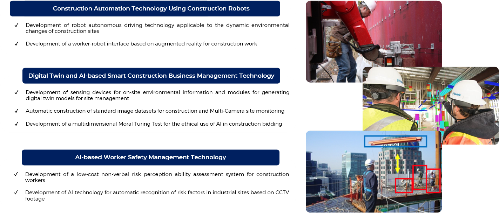
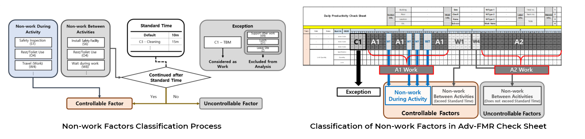
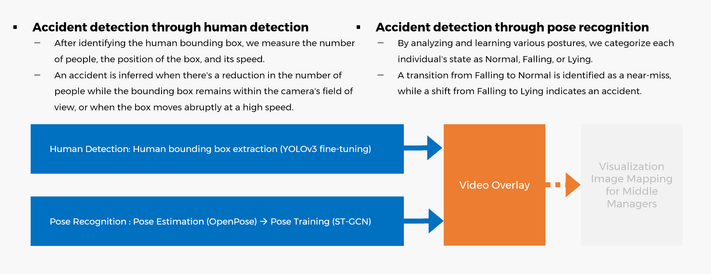

ACADEMIC PROJECTS
-
AI Construction Safety Management Platform Development
Contributed to the development of an AI model that uses daily construction work plans to estimate accident likelihood.
Duration Mar 2023 - Present
Sponsor National Research Foundation of Korea (NRF)
Skills Natural Language Processing, Python
-
Monocular Camera-Based Detection of Suspended Loads in Construction Sites
In the project's initial phase, aimed at detecting suspended objects at construction sites, a comprehensive dataset was compiled using on-site CCTV footage and web-crawled images.
Duration Jan 2023 - Present
Sponsor Seoul National University
Skills Computer Vision (Object Detection, Depth Estimation), Transformers, Web Scraping, Python
-
Smart Construction AI Research Center

Integration of AI and robotics into construction, emphasizing autonomous robot driving, augmented reality interfaces, on-site data capture, AI in bidding processes, and AI-driven hazard identification using CCTV.
Additionally, hosted seminars to promote interdisciplinary knowledge exchange.Duration Jun 2022 - Dec 2023
Sponsor Seoul National University
Skills Deep Learning, Python
-
Automated Cycle-Time Measurement for NATM-based Tunnel Construction using Deep Neural Network

Developed an AI model to manage NATM tunnel construction, analyzing cycle times by detecting equipment and categorizing activities using site video and audio recordings.
Duration May 2021 - Mar 2023
Sponsor Obayashi Corporation
Skills Computer Vision (Object Detection), Sound Recognition, Python
-
Optimization Model Development for Semiconductor Construction Work Plan Based on Productivity Data

Analyzed real-world data on semiconductor construction to understand productivity decline causes, established tailored measurement procedures, quantified influencing factors, and devised a model for work plan optimization.
Duration Feb 2021 - Dec 2022
Sponsor Samsung Electronics Corporation
Skills Data Mining, Visualization, Statistical Analysis, Python, SQL, R, SPSS, Tableau
-
Safety Management Support System for Mid-level Managers at Large Construction Sites

Developed a safety management system using YOLOv3 for human and accident detection, and OpenPose and ST-GCN for posture analysis.
Duration Mar 2021 - Jun 2021
Skills Computer Vision (Object Detection, Pose Estimation), Web Scraping, Python
-
Optimum Design of Concrete Beams Using Machine Learning
Optimized concrete beam designs with a focus on reducing CO2 emissions, used Autobeam for dataset generation, and leveraged MATLAB to develop a machine learning algorithm for cost-effective and eco-friendly designs.
Duration Oct 2019 - Feb 2020
Sponsor National Research Foundation of Korea (NRF)
Skills Machine Learning, Matlab, Python